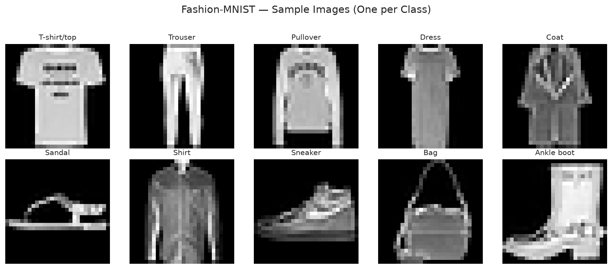
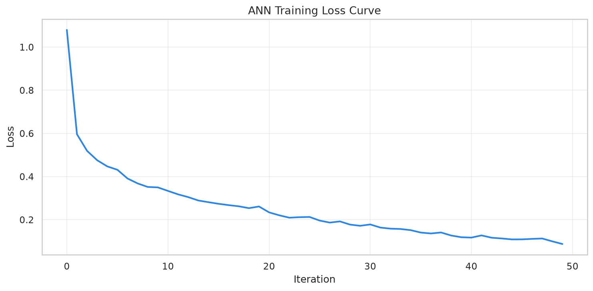
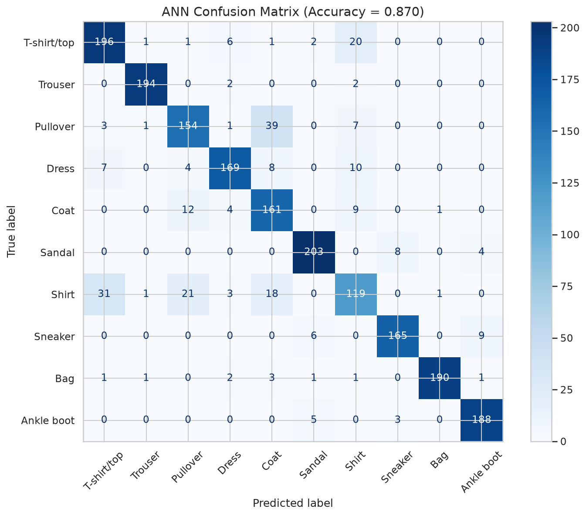
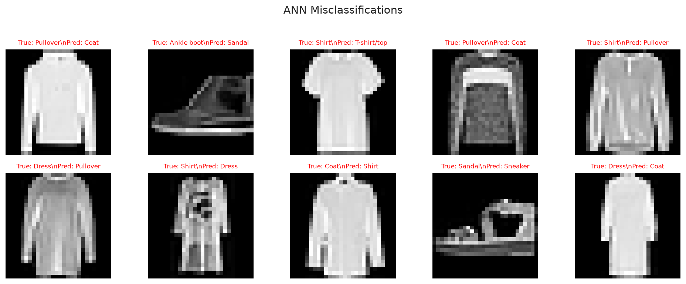

📊 Dataset: Fashion-MNIST (Zalando, 10,000 samples, 28×28, 10 classes)
"kw">from sklearn.datasets "kw">import fetch_openml
fashion_mnist = fetch_openml('Fashion-MNIST', version=1, parser='auto')
X = fashion_mnist.data.values.astype(np.float32) / 255.0
y = fashion_mnist.target.values.astype(int)
"kw">class="cmt"># Use 10,000 samples
idx = np.random.choice(len(X), 10000, replace="kw">False)
X, y = X[idx], y[idx]
"kw">print(f'Samples: {len(X):,}')
"kw">print(f'Image: 28×28 = {X.shape[1]} pixels')
"kw">print(f'Classes: 10 types of clothing')
One sample per Fashion-MNIST class — real Zalando product images
"kw">from sklearn.neural_network "kw">import MLPClassifier
"kw">from sklearn.metrics "kw">import accuracy_score
ann = MLPClassifier(hidden_layer_sizes=(128, 64), activation='relu',
max_iter=50, random_state=42)
ann.fit(X_train, y_train)
y_pred = ann.predict(X_test)
"kw">print(f'ANN Test Accuracy: {accuracy_score(y_test, y_pred):.4f}')
"kw">class="cmt"># ANN architecture:
"kw">class="cmt"># Input: 784 pixels(28×28 flattened)
"kw">class="cmt"># Hidden 1: 128 neurons → 100,352 parameters
"kw">class="cmt"># Hidden 2: 64 neurons → 8,256 parameters
"kw">class="cmt"># Output: 10 neurons → 650 parameters
"kw">class="cmt"># Total: ~109K parameters!
ANN training loss curve

ANN confusion matrix
| ANN | CNN | |
|---|---|---|
| Input | 784 (1D vector) — 丢失空间结构 | 28×28×1 (2D) — 保留空间信息 |
| Parameters | ~109K | ~25K (4× fewer!) |
| Translation invariance | ❌ — 像素位移 = 完全不同 | ✅ — 卷积核滑动检测 |
| Typical accuracy | ~87-89% | ~92-93% |
| Training time | Faster (CPU ok) | Slower (GPU helps) |
核心 insight: CNN 的卷积核在整张图片上共享权重（权值共享），所以参数更少。同时保留 2D 结构，识别物体位置变化。
"kw">class="cmt"># Find misclassified examples
mis = np.where(y_pred != y_test)[0][:5]
class_names = ['T-shirt','Trouser','Pullover','Dress','Coat',
'Sandal','Shirt','Sneaker','Bag','Ankle boot']
"kw">for i "kw">in mis:
"kw">print(f'True: {class_names[y_test[i]]:12s} → Predicted: {class_names[y_pred[i]]:12s}')
"kw">class="cmt"># Common confusions: T-shirt↔Shirt, Pullover↔Coat, Sandal↔Sneaker
ANN misclassifications — even the model struggles with subtle differences
1️⃣ ANN 把 28×28 的图片变成 784 个像素值——这丢失了什么？举个例子。
2️⃣ 为什么 CNN 参数更少却更准确？
3️⃣ 看看错误分类的例子——T恤和衬衫被混淆。如果数据是 X 光片，这个问题严重吗？
4️⃣ 给你 1000 张猫和狗的图片，你会用 ANN 还是 CNN？为什么？